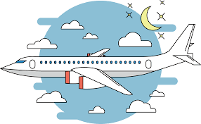

Os primeiros registros
Entre os primeiros registros sobre a tentativa do homem voar está um de 400 a.C. Archytas, um estudioso da
Grécia Antiga, que construiu um pombo de madeira que podia voar em média 180 metros. Acredita-se que tal pombo usava um jato de ar para alçar voo.
Este seria a primeira tentativa bem sucedida de voo. Já em 300 a.C. os chineses inventaram a pipa. A insistência do homem em produzir algo que pudesse voar persistiu por muitos anos.
Muitos deles acreditavam que se acoplassem "asas" em seus corpos, poderiam voar como os pássaros. No entanto, tais apetrechos parecem não ter funcionado na época.
O matemático e inventor grego Arquimedes, em torno de 200 a.C. descobriu como os objetos poderiam flutuar na água. A partir de então, vários estudiosos analisaram a descoberta, e em 1920,
o inglês Roger Bacon chegou a conclusão que usando as características adequadas o homem poderia construir uma máquina capaz de voar.
O primeiro projeto considerado realmente viável foi do artista e inventor italiano Leonardo da Vinci. Os desenhos criados por ele, que nunca saíram do papel,
eram planadores e ornitópteros, ou seja, máquinas que utilizavam o mesmo mecanismo usado por pássaros para voar.
Onde foi criado o primeiro avião?
Em 17 de dezembro de 1903, numa praia da Carolina do Norte perto de
Kitty Hawk, os irmãos Wright efetuaram aquele que seria considerado como o primeiro voo de um
aparelho voador controlado, motorizado e "mais pesado que o ar".

A chegada dos aviões
No século XIX foram realizadas várias tentativas para confeccionar um avião que pudesse decolar através de seus próprios meios. No entanto, a grande maioria não teve êxito.
O inglês Willian Henson, em 1843, foi o responsável pela primeira patente de uma aeronave equipada com
motores, hélices e uma asa fixa, sendo assim, um avião. Porém, Henson acabou desistindo de seguir com o projeto.
Samuel Pierpont Langley foi outro nome importante no mundo da aviação. O americano conseguiu realizar alguns voos não-tripulados
bem sucedidos, porém, ao tentar o voo com um piloto, a sua aeronave não teve o desempenho esperado.
Como surgiu o avião?
O surgimento da aviação é uma das grandes evoluções tecnológicas da humanidade. A criação do avião foi um grande marco para a história, pois ele diminuiu de forma significativa o
tempo de viagem entre duas cidades.
Por exemplo, para viajar de Ouro Preto até o Rio de Janeiro gastava-se cerca de 12 dias, hoje com 50 minutos é possível realizar o mesmo trajeto.
O avião teve origem com um brasileiro de ascendência francesa, chamado Alberto Santos Dummont, que teve a vida invadida pelo sonho de voar.
Não somente ele, mas também os irmãos norte-americanos Wilbur e Orville Wrigh realizavam inúmeros experimentos de vôo, buscando fazer com que um objeto mais pesado que o ar pudesse voar.
Contudo, nessa época já existiam alguns veículos como, por exemplo, os balões e zeppelins, que conseguiam se colocar acima das nuvens baseados nos princípios de Arquimedes, no entanto
eles não tinham autonomia para voar, não satisfaziam os sonhos do homem por inúmeros motivos como, por exemplo, o fato de não poder controlar completamente o destino do vôo desses veículos.
Foi em 23 de outubro de 1906 que Alberto S. Dummont apresentou um rústico avião a uma comissão julgadora, o 14-Bis, marcando dessa forma a origem da aviação.
